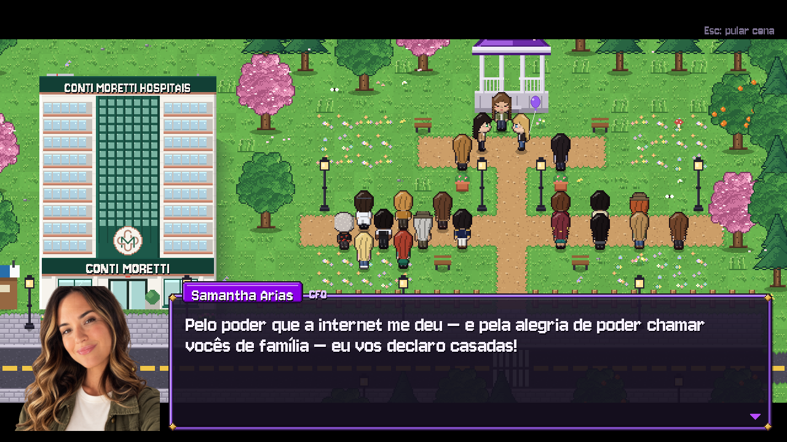

Romance
Duas pessoas podem namorar a Letícia: Lucy Williams e Vittoria Ricci. Todas as outras amizades param em 8 corações.

 Lucy Williams
Lucy Williams
Lucy Williams é repórter investigativa da CatCo. Ela e a Letícia tiveram algo no passado, em Gotham, que terminou sem explicação. É um dos dois romances do jogo.
Encontros
- um drinque no Noonan's
- pôr do sol na praia
- uma noite de leitura na Bayside
- um passeio de iate ao pôr do sol
- uma sessão no Cine National
- um piquenique no Parque Central
- um passeio de veleiro ao pôr do sol
- um jantar feito a quatro mãos na cobertura

 Vittoria Ricci
Vittoria Ricci
Vittoria Ricci é a dona do Gruppo Ricci, rede de restaurantes de National City. Trabalhou anos na cozinha dos outros, abriu a própria Trattoria e agora inaugura a sede. Não é chef: quem cozinha é a Dona Graça. É um dos dois romances do jogo.
Encontros
- um jantar só nosso na Trattoria
- um passeio na praia ao luar
- uma volta no parque, perto do chafariz
- um passeio de iate ao pôr do sol
- uma sessão no Cine National
- um piquenique no Parque Central
- um passeio de veleiro ao pôr do sol
- um jantar feito a quatro mãos na cobertura
Passo a passo
- Até 8 corações
Converse todo dia e dê presentes. Os eventos de coração contam a história de cada uma. Antes do namoro, a amizade para em 8 corações (os corações 9 e 10 aparecem com cadeado).
- Rosas (8 corações)
Compre o
 Buquê de Rosas Vermelhas e entregue. Ela marca o pedido de namoro para um lugar e horário (linha rosa no HUD). A cena termina com um beijo.
Buquê de Rosas Vermelhas e entregue. Ela marca o pedido de namoro para um lugar e horário (linha rosa no HUD). A cena termina com um beijo. - Namoro
Convide para encontros à noite (19h–22h), dê beijos (+30 de amizade uma vez por dia) e abra os corações 9 e 10. Encontros especiais: piquenique, veleiro ao pôr do sol, cinema a dois e jantar na cobertura.
- Pingente (10 corações)
O
 Pingente de Compromisso é o convite para morar junto na cobertura.
Pingente de Compromisso é o convite para morar junto na cobertura. - Vida a dois
Café da manhã juntas em algumas manhãs (sempre no fim de semana), um pedido pequeno por dia e aniversário de namoro a cada 56 dias, com jantar e presente.
- Noivado
Depois de 14 dias morando junto, o Anel de Noivado aparece no Mercado. Dar o anel marca o pedido para a mesma noite, no terraço (19h–23h).
- Casamento
7 dias depois do sim, das 15h às 19h, no Jardim do Mirante. A Sam celebra, a Jess fica de um lado e a madrinha do outro (a Nia para a Lucy, a Dona Graça para a Vittoria). No fim: $2.000 e amizade com todos.
Ciúmes leves
Conversas, presentes, encontros e beijos com uma das duas contam atenção nos últimos 3 dias. Se uma receber bem mais que a outra, a outra comenta na próxima conversa (no máximo a cada 4 dias). Qualquer resposta dá amizade. Depois que a Letícia namora uma, a outra não sente mais ciúmes.
